Safaa Mouline
Intro
Text placeholder.
1.1: Implementing the UNet
Explain
1.2: Using the UNet to Train a Denoiser
Explain
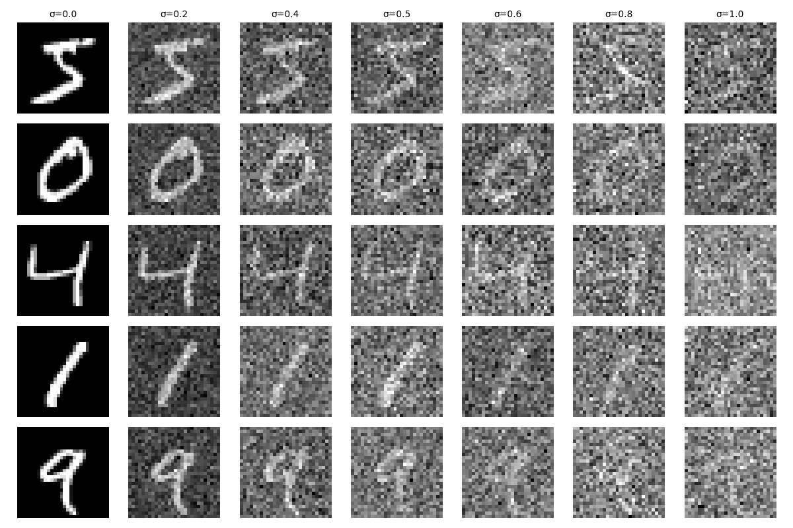
Figure 3: Visualization of the UNet Denoiser
1.2.1: Training
Explain
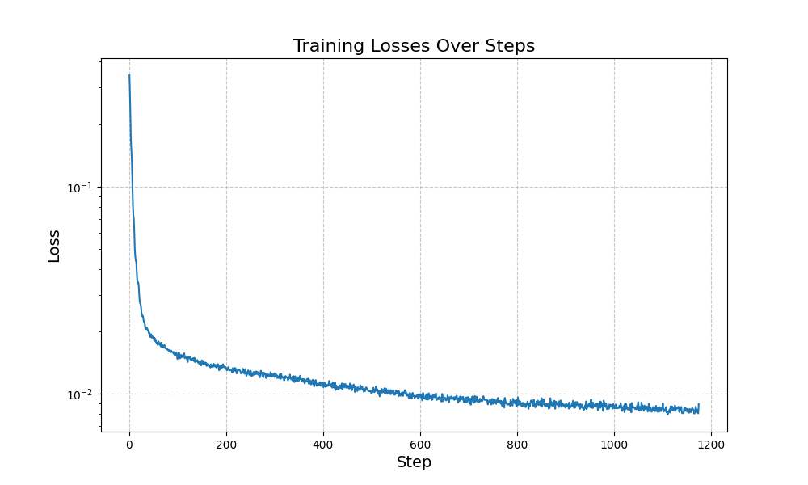
Figure 4: Training Progress
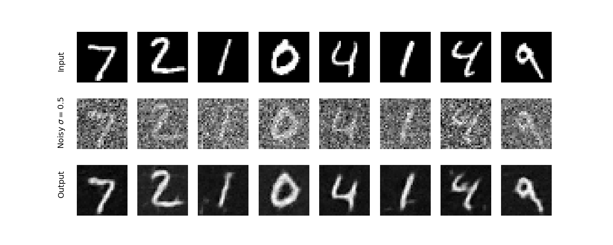
Figure 5: Training Loss
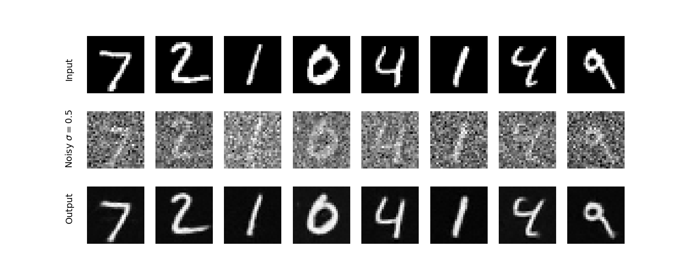
Figure 6: Example Outputs During Training
1.2.1: Out-of-Distribution Testing
Explain
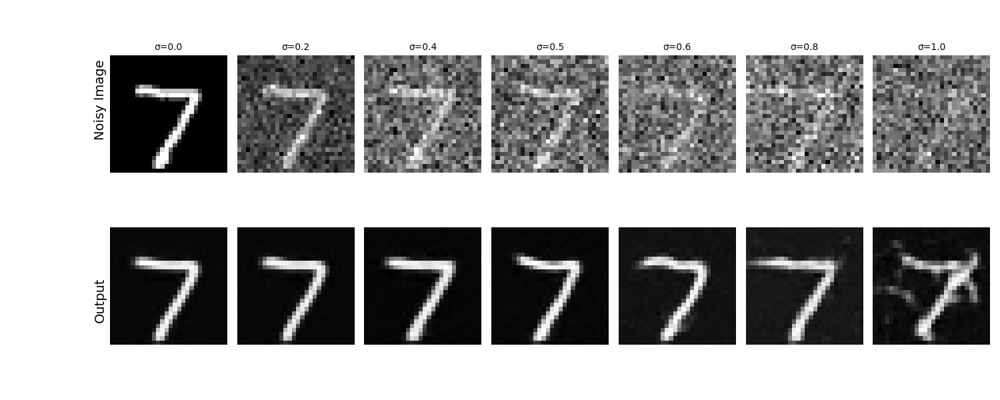
Figure 7: Out-of-Distribution Testing Results
2.1: Adding Time Conditioning to UNet
Explain
2.2: Training the UNet
Explain
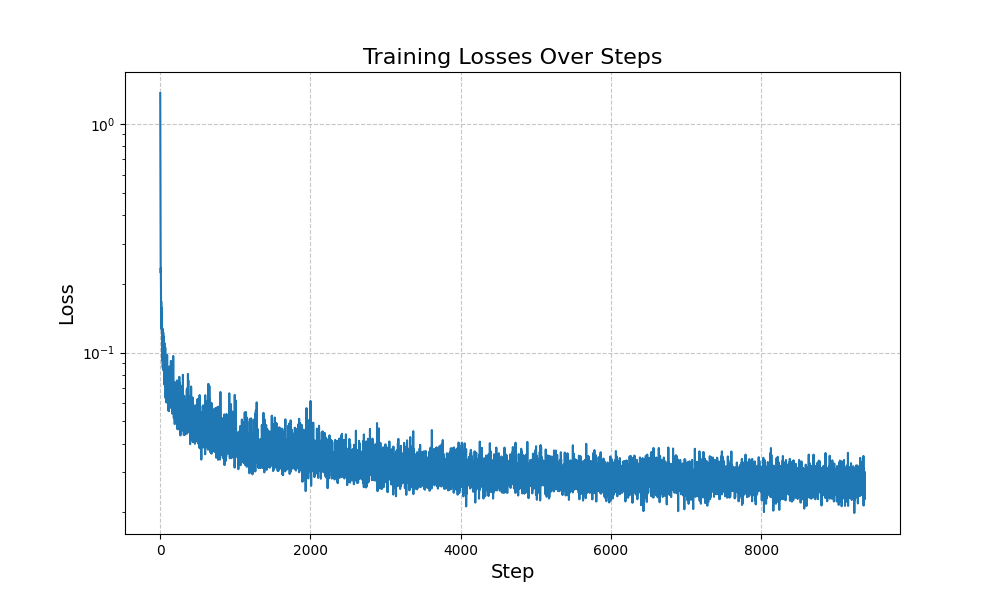
Figure 10: Time-Conditioned Training Progress
2.3: Sampling from the UNet
Explain
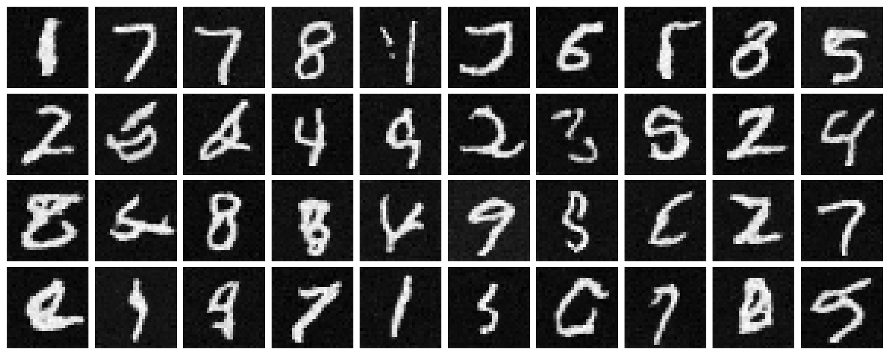
Figure 11: Sampling at Epoch 5
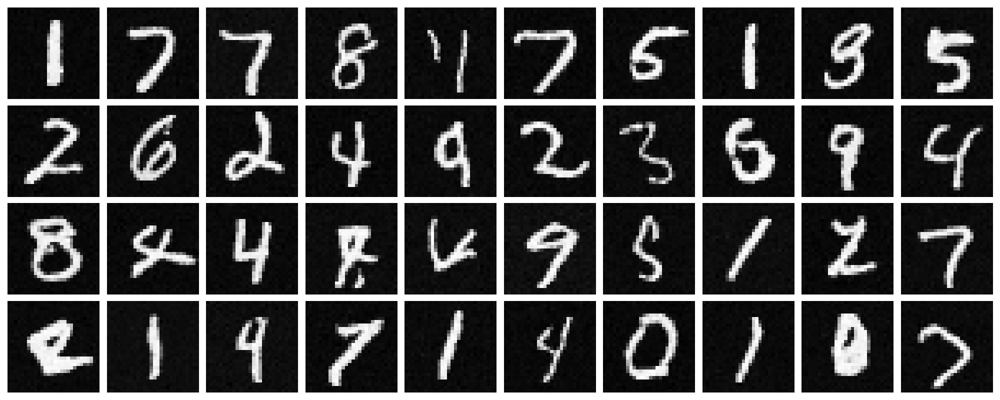
Figure 12: Sampling at Epoch 20
2.4: Adding Class-Conditioning to UNet
Explain
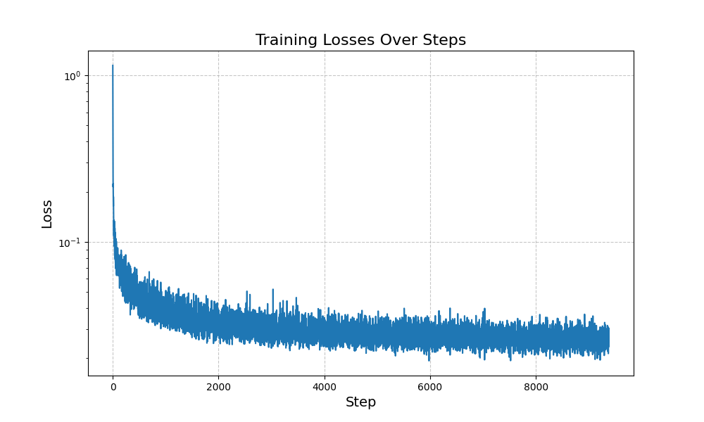
Figure 13: Class-Conditioned UNet Training
2.3: Sampling from the Class-Conditioned UNet
Explain
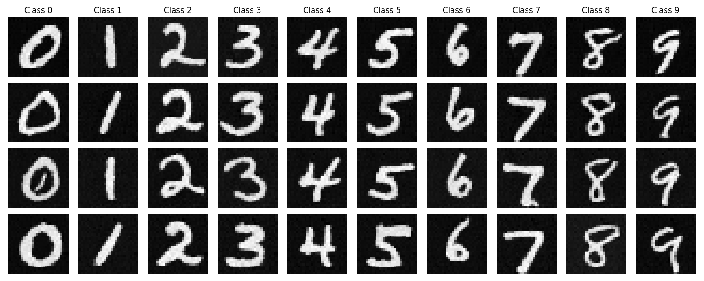
Figure 14: Class-Conditioned Sampling at Epoch 5
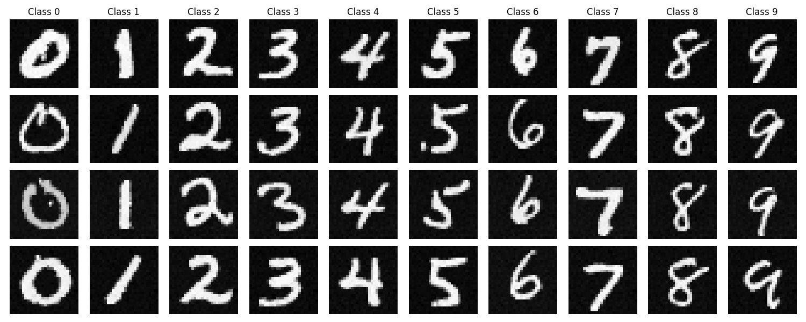
Figure 15: Class-Conditioned Sampling at Epoch 20